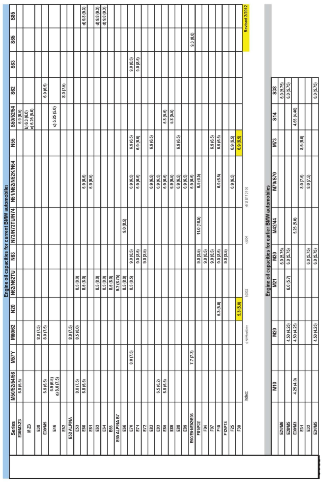

Engine - E Series Engine Oil Capacities
SI B11 11 90Engine
March 2012
Technical Service
This Service Information bulletin supersedes SI B11 11 90 dated November 2011.
[NEW] designates changes to this revision
SUBJECT
Engine Oil Capacities
MODEL
All E Series except E12, E21 and E23
SITUATION
The attached [NEW] chart has been revised to show all engine oil capacities (with oil filter change) for current BMW engines, as well as earlier production BMW engines. This information is also included in the technical data section of TIS and the Owner's Manual.
When checking the oil level after an oil change, the level should be in the upper third of the space between the MIN and MAX marks on the dipstick. If the dipstick displays an improper reading after adding the specified amount of oil, first verify that the engine has the correct dipstick installed. Refer to ETK for individual parts information.
BMW recommends checking the oil level and, if necessary, topping up, using the correct viscosity and quality specification whenever refilling is required (refer to SI B11 08 98 for details).
M3, M Coupe, M Roadster (S54), M5 and Z8 (S62) Engine Oil Level Checking Procedure:
The S54 and S62 engines require a different procedure than conventional practice to check the oil level, which must be followed precisely for a true indication of the oil fill level:
^ The engine must first be at full operating temperature.
^ Let the engine idle for at least 15 seconds.
^ Turn the engine off
^ Wait at least 1 minute for the oil to drain down into the sump.
^ Check the level using the dipstick.
[NEW] All NG6, N62TU, N63, S63, N74, S65 and S85 Engines
These engines are equipped with an electronic oil level check. Follow the procedure in the Owner's Manual for proper checking of the oil level.
WARRANTY INFORMATION
For information only
ATTACHMENTS

B111190 Engine Oil Chart